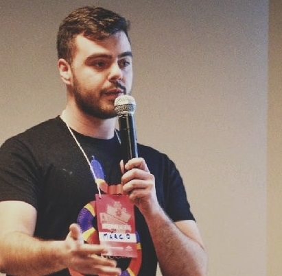

Olá visitante! Obrigado por acessar meu currículo,
Sou Márcio R. Geremia.
Minha carreira consiste em 7 anos de experiência profissional
com análise e desenvolvimento de
sistemas.
Welcome! Thank you for reaching my résumé page,
I'm Márcio R. Geremia, from
Brazil.
My carreer consists in 7 years of professional experience
with software development and systems
analysis.
Minha vida profissional com software começou quando eu fui contratado pela empresa Hansen Automação.
Lá prestei serviços como suporte técnico e eventuais correções na base de dados do software fornecido pela empresa.
(de 03/2013 à 12/2013 em Sarandi-RS).
Mais tarde, tive a oportunidade de trabalhar prestando também serviços como suporte ao usuário e suporte técnico na empresa
Alfasig, aonde tive um aprendizado muito bom no contato direto com o cliente.
(de 01/2014 à 02/2015 em Passo Fundo-RS)
Após este período de 2 anos atuando diretamente com usuários e correções em banco de dados, optei por novos desafios e isso me levou até a
Compasso, que me deu oportunidade de mostrar meu trabalho onde realmente gosto de atuar, que é na
área de desenvolvimento de software. Lá permaneci por 3 anos, sendo que no último ano fui designado como líder técnico do Projeto da Multinacional Oxiteno, mantido pela Compasso.
(de 02/2015 à 12/2017 em Passo Fundo-RS)
Em Janeiro de 2018 entrei para o time da Meta
atuando como desenvolvedor Java e JavaScript
nas aplicações ERP das Farmácias São João.
Em Setembro de 2018, na Meta iniciamos um novo projeto para a rede de Farmácias. Este, voltado para a
precificação e manipulação de contratos de verba e trade.
Fui designado para ser o líder técnico da equipe, onde fui responsável por manter a qualidade do código e resolver possiveis impedimentos da equipe
junto ao arquiteto responsável.
(de 01/2018 - 12/2018 em Passo Fundo-RS)
Atualmente, trabalho como desenvolvedor ReactJS, React Native e Java em diversos projetos na Meta. (de 01/2019 - atualmente em Passo Fundo-RS)
Continuamente, tenho estudado e desenvolvido projetos independentes em JavaScript e Java. Gosto de participar de eventos focados em tecnologia da informação e empreendedorismo, também participei de uma edição do Startup Weekend da Google, sendo inclusive membro da equipe que ficou em segundo lugar na época.
Desde o início, trabalhei na maior parte com Java e soluções para o backend.
(5 anos exp em Java).
Desde então, fiquei bastante familiar com o ecossistemas Java, principalmente SpringBoot.
Porém nos últimos 3 anos vim trabalhando muito com javascript e também foquei meu esforço no aprendizado estudando e desenvolvendo com Node JS, AngularJS, React JS e React Native.
Tenho experiência com testes em geral (Junit, Jest/Enzyme, Cucumber) (1 ano de exp).
Tenho experiência com Git (2 anos de exp).
Tenho bastante conhecimento em metodologias ágeis, principalmente SCRUM.
Tenho um diploma em Ciências da Computação pela
Universidade de Passo Fundo.
(2011/2º - 2016/1º)
Tenho uma Certificação Scrum Fundamentals pela VMEdu inc.
e uma Certificação DevOps Essentials Professional Cetificate (DEPC) pela CertiProf.
Falo nativamente em português e meu inglês é intermediário.
Meu perfil no Github https://github.com/MarcioGeremia
Minha página no LinkedIn
E-mail para contato marcio.rogerio.16@gmail.com
Telefone para contato (54) 9 9979-3147
Obrigado pelo seu tempo!
My professional life with software development started when I was hired by a company named Hansen Automação.
There I did services like technical support and eventual corrections in the database of the software provided by the company.
(from 03/2013 to 12/2013 in Sarandi-RS).
Later I had the opportunity to work providing services such as user support and technical support at one company named
Alfasig, where I had a very good learning in direct contact with the customer.
(from 01/2014 to 02/2015 in Passo Fundo-RS)
After this 2 year period working directly with users and database fixes, I opted for new challenges and this led me to
Compasso, that gave me an opportunity to show my work with software development, which I love.
I stayed there for 3 years, and in the last year of these 3 I was appointed as technical leader of the Multinational Oxiteno Project, maintained by Compasso.
(from 02/2015 to 12/2017 in Passo Fundo-RS)
In January 2018 I joined the team of Meta
acting as a Java and JavaScript developer in ERP applications of Farmácias São João.
In September 2018, we started a new project for the pharmacy network.
This, facing the pricing and manipulation of money and trade contracts.
I was assigned to be the technical leader of the team, where I was responsible for maintaining code quality and resolving possible team issues,
with the responsible architect.
(from 01/2018 to 12/2018 in Passo Fundo-RS)
I currently work as a developer for ReactJS, React Native and Java on several projects at Meta. (from 01/2019 to now in Passo Fundo-RS)
Continually, I have been studying and developing independent projects in JavaScript and Java. I like to attend events focused on information technology and entrepreneurship, I also participated in an edition of Google's Startup Weekend, including a member of the team that came second at the time.
From the beginning, I worked mostly with Java and backend solutions.
(5 year exp with Java).
Since then I have become quite familiar with the Java ecosystems, and especially SpringBoot.
But over the last 3 years I've been working a lot with javascript and also focused my learning effort studying and developing with Node JS, AngularJS, React JS and React Native.
I have experience with general testing (Junit, Jest / Enzyme, Cucumber) (1 year exp).
I have experience with Git (2 years exp).
I have a lot of knowledge in agile methodologies, especially SCRUM.
I have got a bachelor degree in Computer Science through the
Universidade de Passo Fundo.
(2011/2º - 2016/1º)
I have got Scrum Fundamentals certificate. VMEdu inc.
I have got DevOps Essentials Professional Cetificate (DEPC) CertiProf.
I speak Portuguese (native language) and Intermediate English.
Here is my Github profile page https://github.com/MarcioGeremia
My LinkedIn profile page
Contact me by this e-mail address marcio.rogerio.16@gmail.com
or my phone number +55 (54) 9 9979-3147
Thank you for your time!